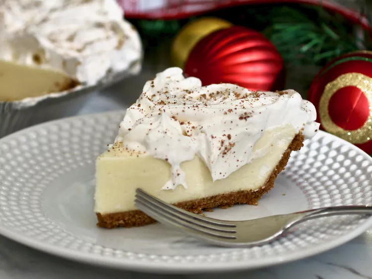

Home
Eggnog Pie

Description:
"This delicate Bavarian cream pie features a homemade eggnog
that can be made in the microwave or on the stovetop.
A graham cracker crust may be substituted for pre-baked pie crust.
Creating this pie is a bit to do, but well worth the time spent!"
Ingredients:
- 1 (.25 ounce) package unflavored gelatin
- 1/4 cup cold water
- 1 cup milk
- 1/2 cup white sugar
- 2 eggs, lightly beaten
- 1/4 cup rum
- 1 cup whipping cream
- 1/4 pinch white sugar
- 1 (9 inch) pie shell, baked
- 1/2 teaspoon ground nutmeg
Steps:
- In a small bowl, combine gelatin and cold water; set aside to soften. Combine milk and 1/2 cup sugar in a small glass bowl. Microwave for 3 minutes or until milk begins to boil.
- In a steady stream, pour hot milk into beaten eggs, whisking constantly. Cook custard in the microwave, whisking after each minute, until it thickens slightly, about 2 minutes. Stir in softened gelatin and mix until melted. Stir in rum.
- Let filling cool to room temperature. (If you refrigerate it, stir occasionally to prevent gelatin from setting too soon.)
- In a medium bowl, whip cream until soft peaks form; beat in 1/4 cup sugar.
- Set aside 1/2 cup of whipped cream for garnish; keep refrigerated. Fold remaining whipped cream into eggnog mixture. Pour filling into pie crust and refrigerate 4 hours or overnight.
- Garnish with reserved whipped cream and a dusting of nutmeg.